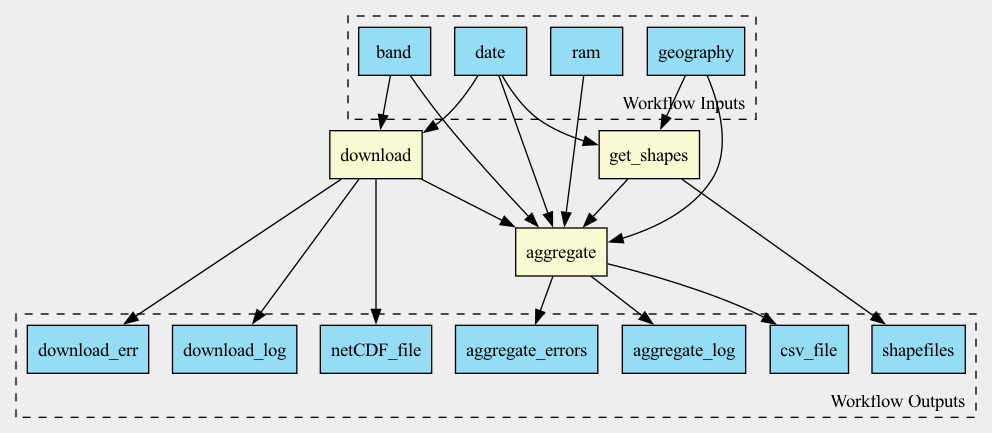

Example of a workflow: aggregating a climate variable
What the sample workflow is doing: aggregating a climate variable
In this example we will be running a simple Common Workflow Language (CWL) workflow. This workflow produces a CSV file with aggregated climate variable over either US Postal zip-codes or US counties. The CSV file consists of 3 columns: variable value, date, zcta (Zip Code Tabulation Area). If US Counties are used, then the third column will be county FIPS code.
tmmx,date,zcta
295.36935960591137,2020-10-03,35592
293.6454457364341,2020-10-03,35616
...
The workflow consists of 3 steps:
Downloads NetCDF file with gridMET data from Atmospheric Composition Analysis Group
Downloads a shapefile set for the given geography type (ZCTA or county) and date
Aggregate NetCDF over polygons corresponding to a given geography
It accepts 1 required and 3 optional input arguments:
date - a required argument to specify the date for which we will be computing aggregations.
band - an optional argument specifying a climate variable. By default, it is tmmx, maximum daily temperature. Other options can be found at the Google Earth Engine website
geography a geography type, zcta (ZIP code) or county, by default it is ZCTA.
ram to be used for aggregation, by default it is 2GB. Specifying higher ram will improve accuracy of the aggregation
This architecture is reflected in this diagram: 
The source code for the workflow is in examples directory. See more details in CWL Workflow Specifications
Prepare to run a workflow
We suggest that You create a Python virtual environment for trying this workflow, or use an existing one. If you are creating a new virtual environment, run the following command:
python3 -m venv $path
source $path/bin/activate
where $path is a path to a directory, that will be created and where the new visualiser environment will reside.
To run the workflow you need to install a CWL implementation. We suggest using Toil. To install Toil just run the following command in your Python Virtual Environment:
pip install "toil[cwl,aws]"
Running the workflow in Python virtual environment
To run the workflow in the Python virtual environment you need to install dorieh package:
pip install dorieh
There is one required argument to the workflow - the date for which we will be aggregating climate data. Then you can run the following command:
toil-cwl-runner --retryCount 1 --cleanWorkDir never --outdir tmmx --workDir . \
https://raw.githubusercontent.com/NSAPH-Data-Platform/dorieh/main/examples/climate-example.cwl \
--date 2020-10-03
(Replace the date with any date you fancy)
Running the workflow using Docker
Dorieh Docker image
A prebuilt Docker image with Dorieh is available from DockerHub. Pull it to your local machine using
docker pull forome/dorieh
command. The image is built for Intel/AMD and ARM CPUs. ARM architecture is used in AWS Graviton2 processors that, according to AWS, deliver up to 40% better price performance. ARM CPUs are also used by latest Mac computers.
There are two ways to use Docker instead of installing a dorieh package in your Python virtual environment. A recommended way is to specify DockerRequirement (See also Using Containers section of the CWL User Guide). An alternative is to manually run the commands inside a running Docker container. While much more cumbersome, this alternative way does not require installing any CWL implementation or even Python.
Using DockerRequirement for your workflow
When using DockerRequirement, you still need to have an engine that supports CWL, e.g., Toil. Therefore, unless you already have done so, you need to create a Python virtual environment and install CWL implementation there, for example with the following command:
pip install "toil[cwl,aws]"
Then you need to add DockerRequirement to your workflow. Using
climate example workflow, uncomment the following
3 lines (lines 34-36):
#hints:
# DockerRequirement:
# dockerPull: forome/dorieh
So you have:
hints:
DockerRequirement:
dockerPull: forome/dorieh
You can now run the workflow with the same command:
toil-cwl-runner --retryCount 1 --cleanWorkDir never --outdir tmmx --workDir . \
https://raw.githubusercontent.com/NSAPH-Data-Platform/dorieh/main/examples/climate-example.cwl \
--date 2020-10-03
even without having dorieh package installed in you Python virtual environment.
Using your Docker container manually
You can also use a Docker container more like a virtual machine. Start it by executing
docker start forome/dorieh
command and just run teh commands inside the container, using
docker exec -it forome/dorieh ${commands}
This way you can use any machine that has Docker without a need of either Pyton or CWL. But you will need to copy your files manually between the host and the container.